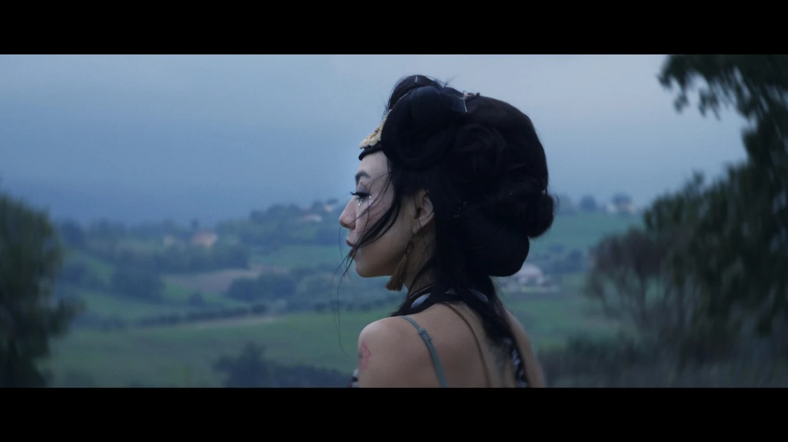
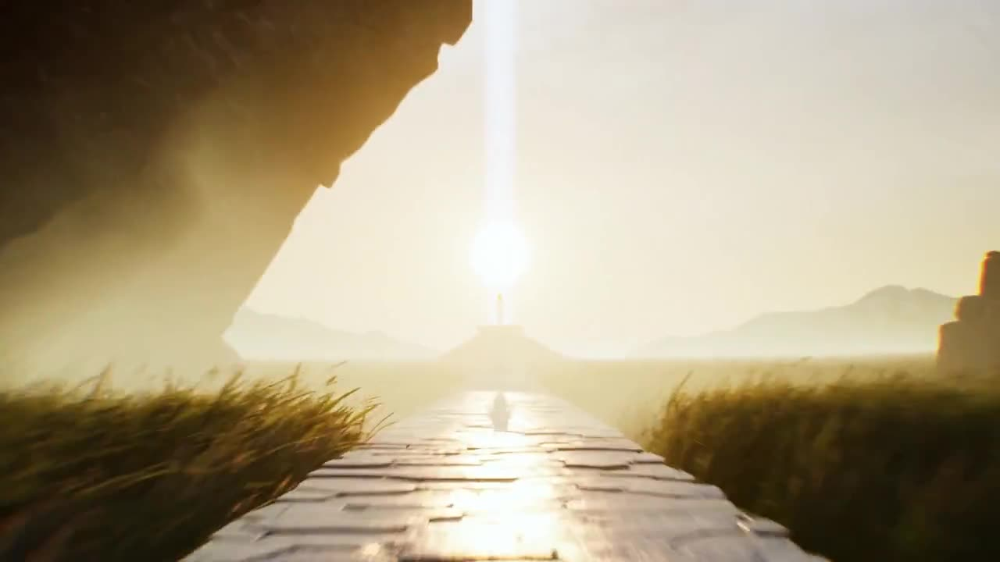
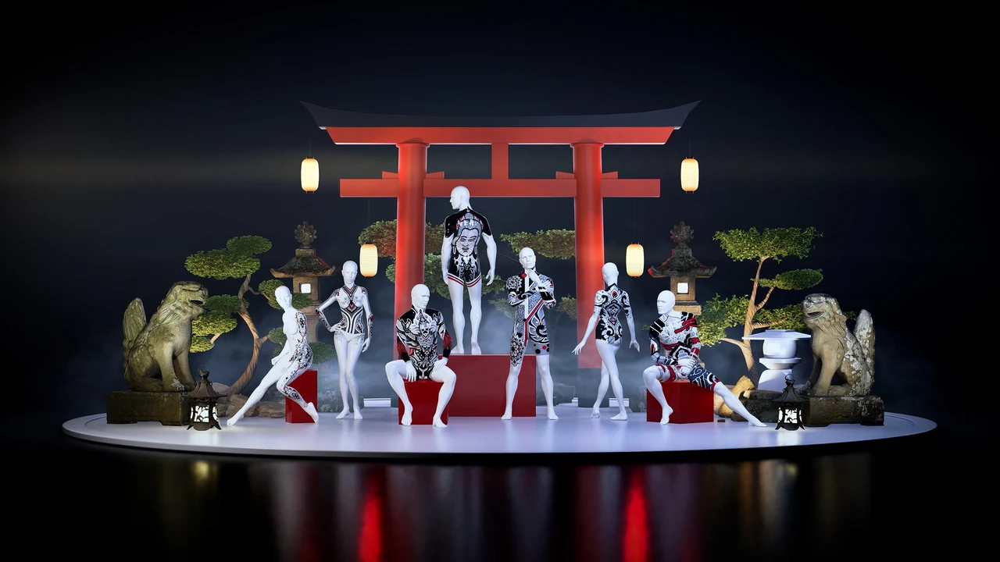
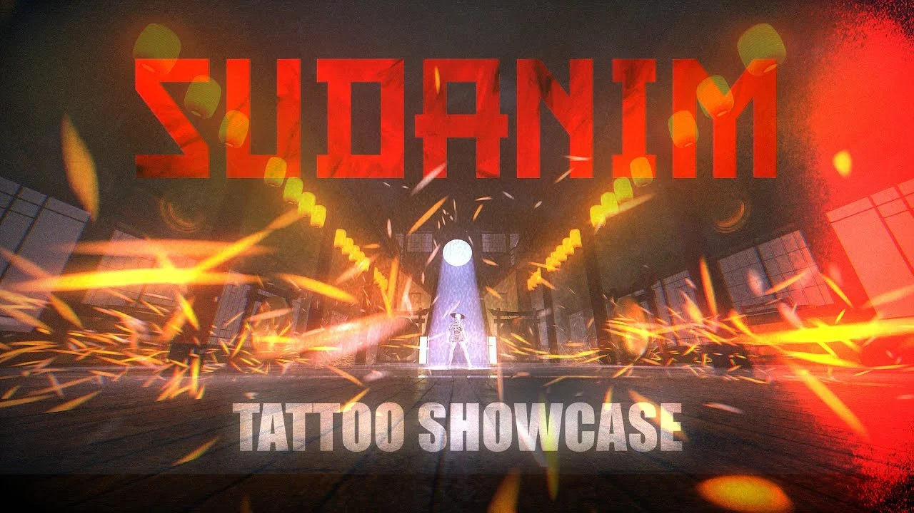
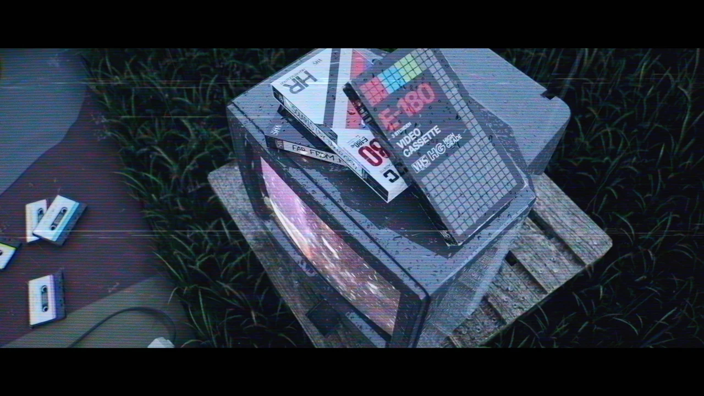
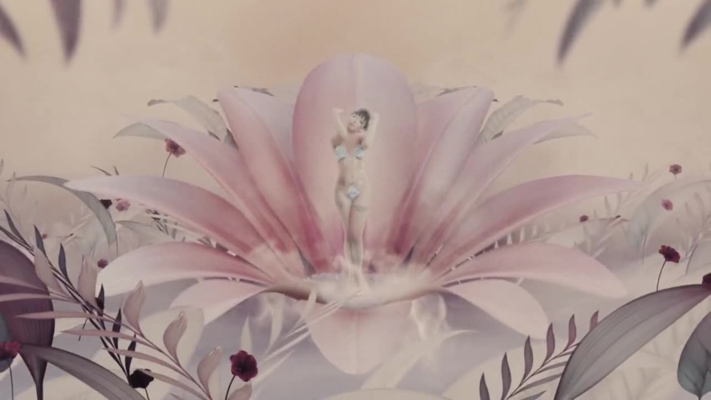
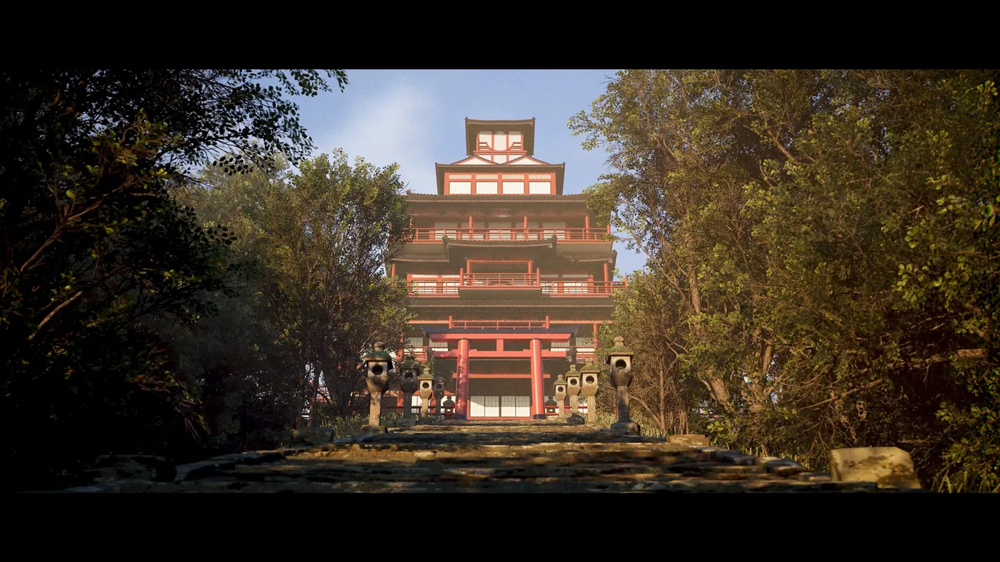
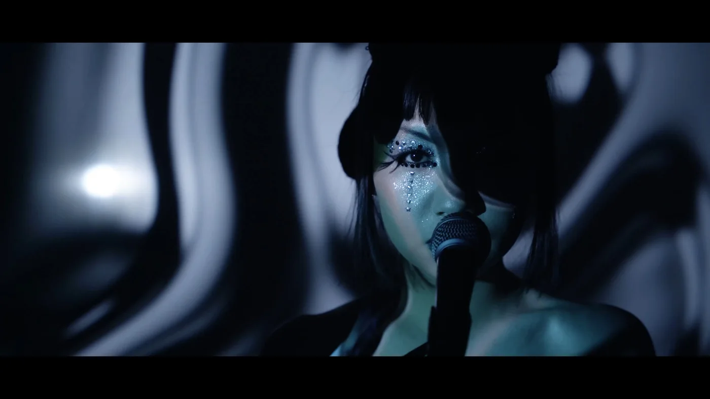
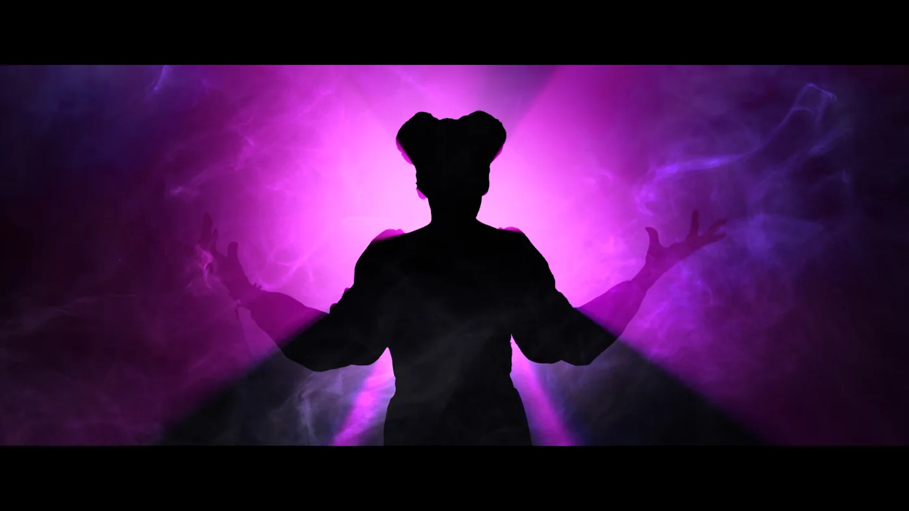
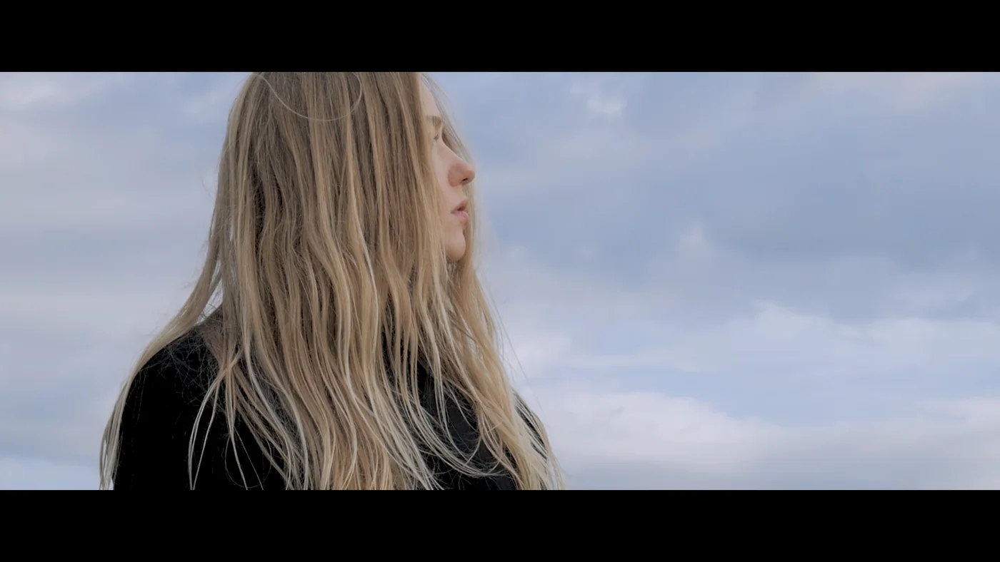

Work
Cinematic video and CGI animation for music, dance and brands.

Yi Jing 意境 Season 2
Live music series · 2026Direction, cinematography, CGI & VFX

Emerald Seed
Animated short film · 2024Direction & animation

SUDANIM Tattoo Showcase Part 1
CGI showcase · 2022Direction, animation & editing

SUDANIM Tattoo Showcase Part 2
CGI showcase · 2023Direction, animation & editing

Soft as Cotton Candy
Music video · 2025Direction, animation & editing

Another Me
Music video · 2021Direction, cinematography, editing & VFX

The Temple
Environment design · 20243D modelling & animation

Yi Jing 意境 Season 1
Live music series · 2021Direction, cinematography, editing & VFX

Mood Swings
Music video · 2020Creative direction, direction, editing & VFX

Glass Slipper
Dance short film · 2020Co-direction, cinematography & editing
New projects are on the way.